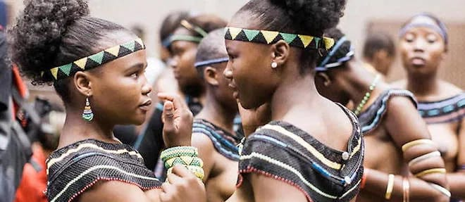

Notre Programme
Cliquez sur chaque volet pour afficher les détails du programme 👇
VOLET PÉDAGOGIQUE
- Veiller à un meilleur déroulement des réclamations et une prise en charge sans condition des étudiants victimes d'omission.
- Organiser des programmes de tutorat et des séances de révision générale en vue de soutenir les étudiants dans la préparation de leurs devoirs et examens.
- Mettre en place des formations professionnelles pratiques entièrement prises en charge par la commission pédagogique.
- Organiser l'Amphi de l'entrée pour les nouveaux et la Journée d'excellence pour primer les meilleurs de la faculté.
- Organiser des journées pédagogiques avec des panels sur des sujets d’actualités économiques en Afrique et dans le monde.
- Exiger la correction des copies en cas de réclamation.
VOLET SOCIAL
- Augmenter le quota d'hébergement en tenant compte du système de couplage, aussi bien pour le premier cycle que pour le deuxième cycle.
- Prise en charge des frais médicaux par l'Amicale à hauteur de 50 % pour les cas sociaux.
- Cf programme C5.
VOLET ENVIRONNEMENTAL

Vers une conscience écologique universitaire
L’enjeu environnemental, désormais central dans les politiques publiques et les stratégies d’entreprise, impose une réforme des consciences à l’échelle individuelle et collective. À ce titre, l’amicale souhaite impulser une culture écologique durable au sein de la FASEG, en instaurant des pratiques écoresponsables, en sensibilisant à l’écoresponsabilité et en favorisant une gestion verte du campus.
Cet engagement dépasse le simple cadre du militantisme écologique : il est une affirmation de notre responsabilité intergénérationnelle. En éduquant les étudiants aux gestes durables et à la préservation des ressources, l’amicale contribue à forger une génération de décideurs soucieux de l’équilibre entre croissance économique et respect de la nature.
VOLET CULTUREL
- Organiser un festival culturel mettant en avant les talents étudiants (théâtre, danse, slam, musique, poésie, etc.).
- Encourager la création de clubs culturels (ciné-club, débat, slam, lecture, chorale…).
- Valoriser les identités culturelles régionales des étudiants à travers des journées d’exposition.
VOLET SPORTIF

- Organiser des tournois inter niveaux et inter amphis dans les différentes disciplines sportives (football, basket, volley, etc.).
- Réhabiliter et entretenir le matériel sportif de la faculté (ballons, chasubles, filets, etc.).
- Organiser une journée sportive annuelle avec des récompenses pour les meilleurs participants.
- Accompagner les talents sportifs dans leurs participations aux compétitions universitaires.
VOLET SANTÉ ET BIEN-ÊTRE
- Organiser des journées médicales gratuites avec la participation de médecins bénévoles.
- Mener des campagnes de sensibilisation sur la santé mentale, l’hygiène, le VIH/SIDA et la nutrition.
- Distribuer des kits sanitaires (masques, gels, serviettes hygiéniques) pendant les périodes critiques (examens, épidémies, etc.).
VOLET CITOYENNETÉ ET LEADERSHIP
- Organiser des ateliers de formation sur la prise de parole en public, la gestion de projets et l’entrepreneuriat.
- Mettre en place un club de débat citoyen et un club des anciens pour favoriser le réseautage.
- Organiser des forums citoyens avec des enseignants, experts et anciens étudiants.
VOLET FINANCES ET TRANSPARENCE
- Publier régulièrement les rapports financiers de l’amicale pour garantir une gestion transparente.
- Créer un comité indépendant de contrôle composé d’étudiants élus et de membres volontaires.
- Rechercher des partenariats et des financements externes pour diversifier les sources de revenus.